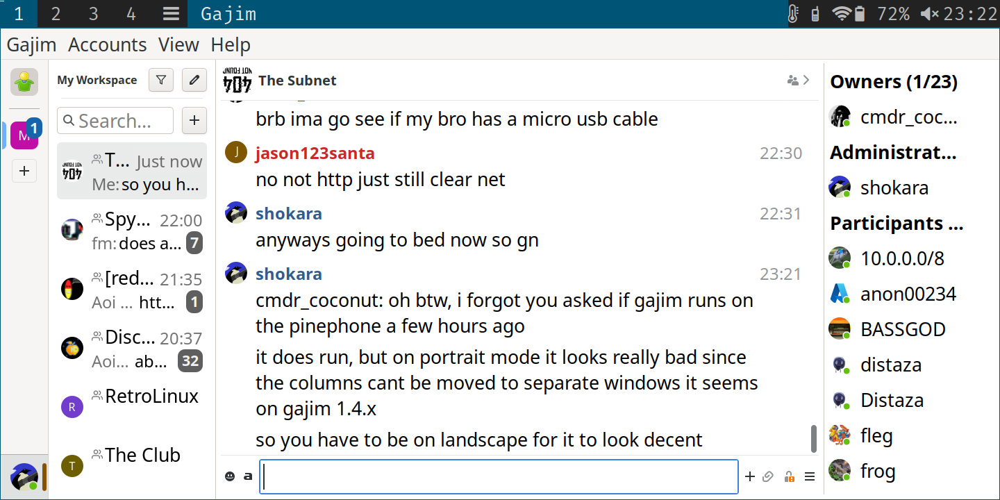

┃┗┫┗┳━┳┳┳┳━┳━┳┛┣━┳┳┫┗┫┗┳━┳┳┓
┃┏┫┃┃┻┫┃┃┃╋┃╋┃╋┃━┫┃┃┏┫┏┫┻┫┏┛
┗━┻┻┻━┻━━┻━┻━┻━┻━┻━┻━┻━┻━┻┛
Videos :: All Posts :: Tags :: RSS :: IMG :: About :: Test ::
THE.ARMADANew for this young year
Greetings Internet People. I thought I would write a post here now about new stuff that's happened-ning.
So that music site project I was talking about in the last post, it's much nice now! You can check it out here: MusicPlace.Vip. I kept the same theme of top level domain (the ".vip") as my other favorite domain name "TooFast.vip" (which is my main XMPP server host). I originally thought of just using a subdomain, as "musicplace.toofast.vip", but was very attracted to the appearance of "MusicPlace.vip" and it was only about 7 dollars Canadian. So over the winter holidays, xmas season, I been occasionally working on this flask application, in part to learn flask web application framework using python language, but also because I had a motivation and that was to be able to share music links on XMPP chats that are not rewritten filenames to some bullcrap non-human readable hash string, and are from a creative origin. The idea was that if I'm playing my music in my VLC or Poweramp app while out and about and I find a cool track in my same collection, as on phone as on server, that instead of uploading the file as it is and it get renamed to aerjnoiub98eronbo.flac, I want that filename to show what the file is! Sometimes people don't want to download crap that has no readable name, as well sometimes people want to keep their file they downloaded, so if I shared it it was for them to listen to sure, but the option to keep it is now successful because going through their files they'll find a file that's named a way they can know wtf it is. Makes sense right? But XMPP and some of the developers for client software and such have a different political idea of how HTTP upload file shares should work. Not many people believe that uploads are away of sharing files, they're supposed to be inline images, or something really web 3.0 bullshit. I find that XMPP is losing it's original web chat spirit because of these "phone fags" as some people would call them, that only think in their development and software progression like a phone user. Sad, really, cuz I am oldschool about web stuff, and I found a lot of value in the way things used to be but see it actively unable to exist anymore. I guess such is life.
So "MusicPlace.vip" the file, or the "/musiclist", is locked by a super secret password, and at this time it is really only myself that gets to use that as I recently changed the passwd and probably will somewhat often. I wanted also to be able to share my music files, which a lot of them are in fact paid for and HQ audio, but I didn't like it as an open public webserver directory as I'm not sure but I don't think that's legal, I really don't know becacuse I cannot digest terms + services legal jargon, who reads that stuff anyways? NOBODY! So but I may have heard it's not legal or something, I don't really believe that because as I said that the purpose is to share them the only available way to XMPP chat. I did due diligence, and whatever.
I am really stoked about the CSS (styles) though, it seems I've created a theme with it too because I've created a subdomain (another simpler flask project inside the musicplace project) that is my place to post a public prayer. I follow the Christian faith. I thought of this as a cool way to praise the Lord. It also uses a similar almost same CSS theme, you can view that at prayers.musicplace.vip. It is not finished yet.
Another thing, I suppose I wouldn't be proud of, is a bullshit saga going on that I'm making the most of with humour and no fucks given, is a saga where I was originally banished back to an XMPP group chat I thoroughly hate and in such banishment, which not a nice thing to do, I suppose I've seized the opportunity to shit all over that chat and do and say whatever the hell I want cuz fuck you. That's because they all did an offence to me and already hate me and think bads things about me so I am indeed being a plague and don't care, you cannot nor will not be able to make me care. LoL.. Stubborn, I know, but in my eyes it's worth the hilarity it causes sometimes and I should learn to care less about what internet people have to say, not in the way that it creates more problems for folks, just that I have been known to get offended. People don't care to unnofffend me once offending me and I cry a lot because of this, and so, I am now perpetually full retard until enough of my JIDs are banned I feel successful.
So yea, that's the happening today for recently. I am enjoying flask, because I enjoy pythons, and the creative juices are a flowing! If you want the password for the music app, only authorized people are allowed to ask me on XMPP as my JID is, you will have to figure that out. I'm not giving it out publicly anymore. So on this day it is good to be alive and thank God for all things provided, he is much our true captain and leader and rememberig Him is loving Him who loves us. pEAcE
Tags: the8woodcutter, news, python, flask, musicplace, webdev, xmpp, saga, lulz
I wonder now what now happening, how come, what for?
Heya internet. Whappens moew?

So this past 2 days has been gruelling, back breaking, barely withstandable labour to do a handful of things. I am basically going to try to make a web community under the pirate flag of THE ARMADA, do not repeat that without using all capitals, out of respect for the fallen comrades, thanks, but in making this community again it requires a code place. I mean a place to put the code, that we work on. Fun part about gitea is it has communities for things like this. When I first tried to make this community I also tried the google shit, that supposed business email, groups, etc shit, and I say shit because just like amazon I can't imagine how such a terrible corporation is s filthy rich.. Anyways. So I thought this time I would make a mail server on my Network Throughput I/O domain Packets.cc .. Anyways, and I found a thing, I haven't seen it yet, but in debian repositories mailman3-web (i think it was). I guess it uses a thing called HyperKitty and Django for a web app that handles mail? I'm willing to give it a try!
As well, I'm not sure why I'm struggling to understand and deal with figuring out how the F to host a uWSGI, or any WSGI, server for proxying my https from my FLASK PROJECT!! üòÑüòÑüòÑüòÑ Yes, I am VERY much happy that I am learning a new, and in my opinion possibly better than Laravel, web application framework. I'm pretty sure very very few people know one thing about me, and that is that I really enjoy web applications and creating them gives me a helluva a good feeling when confronted with all the ideas I get for building web apps. This is truly what I was destined to do I think but anyways, so, I'm really stoked about Flask, and Pythons!
It is questionable whether the page is or will be operational, but MUSICPLACE.Vip and JUST TODAY! I managed to figure out how uWSGI works, at least enough that it's rendering the CSS files. It's a work in progress though, and I'm not giving out the password until it's stable. Afterwards I might ask a couple of folks if they want to poke it, meaning with a pen, just to know I build my flask app sturdy.
I shall return for more EPIC POST! GIT ER DRUNK, BAMBOOZLE HER, THEN PARTY AT MY POST! LoL I just made that up, stupid, I know.
PLUS: As for XMPP, which I fail to properly rage quit, and I am permanently a slave to, I discovered that one of my new years resolutions for 2024 will be that if I'm going to always be a strange and weird XMPP server operator, I might as well be better at it. Blimey trolls! OH AND ONE MORE THING: I shall be doing CSS/layout type modifications to the8woodcutter.sh, to make it actually worth visiting. There's a slight chance that this intention gets lost in the abyss of my many missions but let's propose it happens, and you might love the changes when they come, bon voyage! üòµ
Tags: news, the8woodcutter, chunk, xmpp, flask, python, learning, uwsgi, webapps, webdevelopment, coding, sysops, devops, linux, css, html
Happy updates to mrBot's doghouse!
Greetings internet! I thought I would explain about some of the updates I've done to my XMPP chat bot mrBot. It's funny, at one time mrBot was probably more famous than I am in XMPP world. In case you still don't know what XMPP is, that I continuously refer to, allow me to explain shortly:
XMPP (eXtensible messaging and presence protocol) is not a web program, persay, as the "web" runs primarily as websites using HTTP on ports 80,443 in the internet network among the world. So websites are the "web" and this is a chat protocol that is open source, fully open and standardized, and has matured over 22 years since the days of yahoo messenger, icq, aim, aol, etceter, those 90s chat programs you used to have to chat with people from around the world. Well, all of those are dead, except for XMPP and IRC, which in my humble opinion will never die. IRC (internet relay chat) has been around quite a lot longer than XMPP however THE CLOSEST thing to IRC that exists today is XMPP and XMPP is extensible beyond comprehension. It has what are called XEP sub protocols for features used within the XMPP master protocol and can do things that IRC typically can't or won't do, or not typically, like HTTP file uploads, publish subscribe (pubsub) services for infinite blogging, status, real time syndication type of stuff. If you've ever used Discord (gross) then you are aware that you can see your mates' status lines (under their name), whether they're online (green), away (orange), or invisible, etcetera, this is called "presence" and XMPP pioneered it FIRST.
One of the common things about open source stuff, especially as massive as XMPP as a protocol and a realm in which folks have build many many open source projects for use of it, is that rich fucks like Google and Facebook (yes, both have and did) have used the XMPP protocol for their google chat, facebook messenger, and once upon a time not too long ago you could actually connect to their networks using XMPP but not anymore! Embrace, extend, extinguish, was their intentions. Fail. The awesome thing I love about XMPP is that B: the entire scene is federated, just like email. You have what's called a JID (jabber ID, because XMPP was originally called Jabber) which is simply a username@domain and unlike IRC, and some other platforms, that are newer and far inferior, you can TOTALLY expect to get access to the entire federated public realm of chats. However there's a great many security features as well, and instance operators can choose to make their MUCs (multi user chats) private, moderated (require voice to chat), members only, and even enable E2EE (end to end encryption) in group chats. So it's pretty covert if you want it to considering putting your instance on the tor or the i2p network.
Yes XMPP is fully open and public and it's beyond comprehension how extensible it is, and if you get to know the folks on there you can get to know how to make the most of XMPP. A lot of folks become rather interested in computing, linux and self hosting services on linux servers. A perfect place for me.
So I've made a bot, I started building mrBot about 2 years ago with the ErrBot multi protocol chat bot framework but I was dissatisfied with the errors and the bugs. I eventually went with SliXMPP which is a mere library fully suited for XMPP bot building, among other amazing things. This has enabled me to grow my python skills a lot!
So what I am happy about today is that I have polished up some bugs with mrBot. Namely his awesomes function where he can accept a count, positive or negative, for any string almost. I also finished rebuilding some functions that I had him doing when I was using ErrBot like the rolling of dice. When you write "Roll 55" for example he'll output this:
⚂ ⚁ ⚄ ⚂ ⚄ ⚅ ⚁ ⚅ ⚄ ⚁ ⚁ ⚄ ⚁ ⚀ ⚀ ⚅ ⚃ ⚀ ⚀ ⚅ ⚄ ⚀ ⚄ ⚁ ⚃ ⚅ ⚄ ⚂ ⚀ ⚅ ⚄ ⚁ ⚅ ⚀ ⚂ ⚁ ⚂ ⚂ ⚅ ⚁ ⚁ ⚃ ⚅ ⚄ ⚁ ⚄ ⚅ ⚀ ⚄ ⚁ ⚀ ⚁ ⚄ ⚅ ⚃
A totally randomized dice for as many as you specify. I realize it's kinda dumb, but it's entertaining to me, and mrBot's entire purpose is to teach me Python language. Another thing I finished up was his "Food {food}" function where I've written pretty long lists for things you can "feed" mrBot and he'll have a cool answer to depending which category of lists you select what you guess for feeeding him. Yea mrBot is kinda like my pet, in fact he's "my dog" and I do get pissed off when people kick him from the chats LoL...
SO aside from these obviously fully useless non-utility bot functions, tht are merely entertaining at most, I have finally done something, and begun to build actually useful bot functions for mrBot. Namely network utilities. Once in a while, like today for example, we'd be in a chat talking about how another operator has got a configuration issue where his server cannot reach mine, for example. One of the common routines in this is some network command tools like ping, and some dns lookup tools, etc, that can help diagnose the network and come to a solution. Well it's sure handy, if you think about it, to be able to search DNS records, with record types, and also to be able to ping with ipv4 and ipv6 another host, via a bot in that very chat, it makes things transparent and easily accessable. So I've created today a host, a ping and a ping6 tools for mrBot. Tomorrow, if I'm feeling up to it I'd like to make the harder one which is the dig command so that that pretty much covers the basic most common tools for initial network probing.
I think, though honestly more like a really long time ago, this definitely permafries me as a NERD. Ahahaha, which is awesome, cuz I love to do this stuff and it's functional uses are fun for the future too. It's worth it to me to have spent numerous hours today to make this collection of bot upgrades, as I'm also expanding my python skills and learning new concepts and better use of the language and it's syntax ^^
A veteran web developer named Sam from Scotland, who somewhat mentored me a few years back over skype, taught me to have a practical use example for things you study if you're having a hard time understanding them. You honestly can't just brute force learn stuff without such strategies, I'm serious. You'll never get hands on experience. This is how I've enjoyed over past years creating stuff, and then going slightly really astray and building my own custom stuff that impresses, all from learning.
That's enough rambling. I had a certain long time friend in mind who I wanted to read my blog, I'm pretty sure he's not aware of it, he may not even be interested in it, but I had you in mind coatrack buddy for this cuz I think u'd be stoked. pEAcE !
Tags: chatbots, mrBot, bots, slixmpp, python, xmpp, nerd, computing, programming
SliXMPP Python Library and mrBot Missions
Greetings fellow netizons. It is I, the woodcutter a.k.a. chunk from xmpp/irc. I wanted to ramble a bit about what I've been working on with an awesome python library for making XMPP chat bots called SliXMPP. I have had for approximately two years now a bot of my own name mrBot and at one time he was more famous than I am in XMPP as everybody love him. mrBot was my original python project for learning while exercising python and it started with errbot the multiprotocol bot framework actually. It was a little bit too in depth and took me a long time to just get the configurations to work smoothly but then after not maintaining interest in it because of it's often bugs and inconsistencies I got slacking and bored of it. What made me switch from this errbot project was that I was using a docker container, and this errbot can load in a list of MUCs or IRC channels so one docker container is good. However that container was dated, as with most images on the docker hub, I eventually learned when in IRC a spammer had completely abused it inside out and the "ACL" or supposed access control list was null, it was configured and I swore it was fine, but worked not at all. That was crappy. So i ended up figuring out from a friend Shokara, who had the idea, was to use a biboumi transport, that can use IRC in XMPP client software, and so with XMPP ACL's working I could resume using mrBot in IRC but I lost a few benefits due to the nickname/JID translation. Finally I was working on a cool plugin I called err-megaphone lol that mrBot would take from an admin only an argument, which is a message, after a command then send that whole argument to all the chats he is currently in. So it could broadcast muc/channel wide whatever. I thought this could have so much been so much fun to make and it was absolutely meant for XMPP, as mrBot lives in XMPP world, but I kept getting some dumb async error, and worked like an idiot for waaay waaay too long and gave up because errbot, I dunno, I don't think it's maintained by more than maybe one guy, and not maintained well I think. It's however a multiprotocol bot program so it's huge. I gave up and after about 3-6 more months passed and I decided that a library isn't going to hide from me so hard and get lost in object oriented programmiing aspects, in classes and namespaces and aaaaaaaaaaaaaaa omg.
Holy moley was I correct. SliXMPP is really not hard, it is no harder than errbot, in fact probably a fair bit easier and sooooo much simpler. As well for learning Pythons, it's helped me boost my level in /usr/bin/python3.10 a LOT. However anytime you want to check out or use and modify the errbot plugins I made you're welcome to find them all on git.sr.ht/~cmdr_chunk. He had a food function, where chatters could feed him things, it had 4 lists of foods, for 4 response. What I think made mrBot so awesome is the response I made for him to act like a dog because his avatar in XMPP is indeed a cute pixelate dog. "My doggo" and when jan6 kicks him from #offtopic on ircnow I get on his case "you kicked my dogg, i keel you! i will jump this fence and keel you and your family!" lmfao if you get the reference.
So in SliXMPP I've recreated and basically perfected a particular function that another popular IRC bot program called bitbot does. I guess not so popular I cant find it's code on a web search, not the OFFICIAL code at least. It's originally called "Karma" where if you quote somebody with a ++ to say nice work, or what have you, and likewise -- in case they bad person or something. I remade this SOOOOO much better. I called it Awesomes. Because it's not a person based thing, you can ++/-- any string you want using certain regex parsed characters under I think it's 22 characters or so. As well not just at the beginning of the message on first character you start it, you can ++ a string like pythons++ right here <<< mid sentence and even pythons++++++ again and it will catch them and increment / decrement the string for a saved count. It uses shelve with python, it's new python3 shelve stuff that can REALLY easily save simple parameters to a database file and be modded and read again anytime later. Anyhow, the awesomes function of mrBot does sooo much things better than bitbot and it's practical use case is fun and makes sense. I've put a lot of work into it for my SliXMPP doghouse for mrBot and it's very well done. Also I didn't mention that to use spaces instead of simply words space delimited you'd use "word"-- and even "word%%!"+++++++++++++++++++++++ and it parses correctly. We've tested this function very much in IRC and good times ^^
I will tell of more mrBot tales another time folks, this has gotten long, come to XMPP or irc.ircnow.org and find me as chunk,b0t,cmdr_coconut or cmdr_melon on #offtopic, #armada, etcetera. Bon Voyage!!
Tags: slixmpp, xmpp, python, programming, bots, mrBot
Something I think XMPP could benefit from
chunküö¨
I think XMPP could benefit from more web based stuff. Like, as far as I know there is Conversejs which runs over BOSH or Websockets, and is basically entirely a javascript (ewww) application. It's prettty nice I am using it on TooFast.vip right now and in an iframe on The8Woodcutter.sh.
There is also a much nicer web client (full) called movim and it has an AGPL+ licence (i think) and you can iterate either of both of these types of web clients on your own server for your users and federate also, so that any user can use it, in Jabber Land.
There's another one too xmpp-web or something? Here on Github (official???) and I have yet to try this one, in fact why don't I try it tonight? I'm not entirely sure I'm up for the challenge though :/
ANYWAYS so what I think is good for XMPP is if there were more utilities for accessing XMPP network. Such as a service discovery tool, standalone not in any already pre-existing full web client, and a standalone pubsub explorer would be effen mystical to have. Just as standalone mini-apps. So like let's think, perhaps the pubsub viewer just requires websockets connection and access to websockets API for an XMPP server. One could make a custom/community lua script for prosody as a module for a (example:) mod_web_pubsub_viewer and upload it to prosody's open community plugins. For ejabberd compliance, I'm scared of thinking of even writing a module for ejabberd, erlang is scary, but, perhaps just add it as simple as possible as a websockets extension if websockets is a listener value in ejabberd config like for instance :5443/ws might be all you need. Then what the actual module is mostly made up of is the viewer content in html/php/python/whatever (and please GOD don't use some obtuse not meant for web language I nor most major web developers are going to use like Rust or C++ or Kotlin or Golang or some dumb shit just use PHP for us normal people). So it's two parts: can it read and authenticate websockets data on xmpp, and is it nice looking web widget PHP/HTML/CSS plus..
I actually, for once, since most of any time I share my ideas, as I do have GREAT ideas OFTEN and they get poached and done way ahead of my ability timewise, for once, I doubt anybody is going to do this so I'm going to put it on my list of stuff to build. That way, if for any reason you want to just [Login] box then [Search Hostname] then a tree view of any applicable pubsub material (preferably public stuff, fully federated) and a [Sub] or [UnSub] and/or as time goes by more options thta pertain to subscribing to pubsub items. I still have no idea how they're pushed to subscribers. I can only recall seeing it once before, and once another time I did a thing (can't recall) where it posted payload data too (more than just a dumb ping with one word irrelevant of anything saying what it is or where it came from). So this is a lot of discovery and code and XMPP stanzas to file through.
I'm still waiting on a stable place to live so I can accelerate really good into this stuff as it stresses me out and is a disability, I suppose, to not be sitting on a couch I know I can get really involved in something that will take months. In regards to having found a home, I've just moved to a smaller place in my province and it's been cool so far, I hope I can find a way to stay long time.
"Skill is only developed by hours and hours and hours of beatin on your craft" - What I just heard in my headphones in a hardcore mixset üí£
Tags: chunk, xmpp, jabber, pubsub, webclients, webdevelopment, ideas
Today's labor of love
So yesterday evening I was getting, once again, upset with my busted nvidia drivers and my libvirt not working. I needed the nvidia drivers because I wanted to test out if my Win11 disk (my slow SSD, bahaha) can run games if my entire one (1) screen is ran by nvidia. However I couldn't fix OpenSUSE-Prime (systemctl status prime-select) and it was dumping cores and stack traces and shiez. Then for no good reason virt-manager refused to load qemu/kvm:// and refused to connect. I like to speak a bunch like I know things, and when I do, I do know those things, but sometimes I can't be full of pride and think I'm very good if any good worth a shit at some stuff and I have / had no effen clue how to debug libvirt errors. Lest I even bothered, I had failed to work on nvidia prior to that.
As it may have been known, at least to some aliens, I have been running OpenSUSE (Open Source Community Based Enterprise Linux (RPM Type distribution of Linux)) and it's been a love hate relationship, mostly of love. I love SELinux and the fact that it's extra contexts sandbox core hardware, kernel and system level accesses and with OpenSUSE TUMBLEWEED (Not supported in Leap) SELinux enforcing targeted policy is an option in the installation. It can also (and I don't know how awesome or even a point this would be) apparmor at the same time. Being an enterprise linux it's got a lot of security, that's basically it. Centos 7 was my first enterprise linuxes and back when it actually came with compliance security schematics for like, government security and you could enable a security policy meant for a hospital or something... I imagine. OpenSUSE has taken me a while to get used to because of the linking of standard things like sudo cp /root/Xorg.conf.neww /etc/X11/xorg.conf or the grub-mkconfig -o /boot/grub/grub.cfg and typical MANUAL stuff that I'm used to with üì¶ArchLinuxüì¶ so it's pissed me off a few times, like when I had to discover that (and don't quote me on this, but it's how it appeared at the time) in order to change your desktop manager or your xsession (desktop environment) you needed to use a "helper" script lol helper, update-alternatives --config default.xsession and it brings up an interactive thing you can choose which DE/DM you want, if you have a few. However this, 'dynamic linking'? IS THIS WHAT THIS IS?!?!?! Is NO WHERE'S NEAR AS BAD AS ON Vultr.com or Ovh.com hosted host hosts. I've tried with all my might to overwrite and chattr +i /etc/resolv.conf yet that stupid cloud-init shit overwrites and links back and forth everything so bad it's maddening.
Suffice to say, I switched to Vultr.com for hosting for now. Not a big difference from linode. Considerably more expensive for less though and their cheapest "bare metal" server is 120USD / month (there was 2 available at the time). I got a $250 credit with vultr.com and I had fallen into some hardship IRL with money and a place to live and stuff costing me all my money, all. I couldn't afford liniode for the time being. Now however, I want to tell you that I am sad about this and I highly maximum rate Linode.com as I've been with them for I dunno how many years. ANYWAYS. SO I reinstalled my OpenSUSE over the night, took me a few hours to backup my shit, then I ended up wanting to try and install a bootloaderless (efi, secureboot, tpm) iteration on a bum partition, that failed, so I started again. THIS TIME, despite how much I HATE using anything other than NetworkManager I remembered to use Wicked network crap and have to relearn it. Suppose no big deal, as long as I don't come to a dead end for a week. The reason for that is because network bridge autoconfiguration for Xen hypervisor and Qemu hypervisor you need wicked or else you'd need to find a proper guide and follow it. Unless you're fkn leet and you run doez sockets anyhow.
I always use xfce4. If I use anything but xfce4 it's RARELY KDE/Plasma5 or it's usually i3wm. Sometimes I use lxqt (on archlinux) and already have i3wm install beforehand and it meshes better as the window manager for lxqt on üì¶ArchLinuxüì¶ than others I've tried, and got annoyed.
Lemme show you what I'm most happy with today, that I was spending my other half of my time doing:

So recently for something to do I made a weather.php script, a hitcounter.php script and I had another one I was going to do too, for The8Woodcutter.sh but I didn't like the color composition of the basically, erm, crap. Yea I had crap underneath the THE8WOODCUTTER banner and I ripped dat outta ther and were left with this space. I thought to myself two things: this is the way it was originally, big deal. As well, why not put a WIDGET or some WIDGETSsSSSs there? STUFF THAT I MADE MYSELF? STUFF THAT IS COMPLEX? I mean, no joke ass "plug it in" WP plugins that are a nightmare to tweak their obtuse OOP entangled shit so you get what you want but MAKE WHAT i WANT. I have a few ideas for portable widgets, that would be for #1: portable, #2: generally placeable on any webpage not running fucking erlang or some kookey shit like golang (sorry to those that really dig it) PHP or Python, like Flask, Django, Laravel, basic PHP, hell just an PHP enabled server that will simply just run php, but you gotta convert the files to, jokes, hopefully that doesn't ruin my post :| .... PHP FILES. NOT HARD NEWBS.
NOW I HAVE PUTTED A PORTABLE XMPP CLIENT ONTO MY BLOG PAGE WHICH IS HOSTED ELSEWHERE!
My score for this software at time of posting is ✪✪✪✪✪✪✪✪✪✫ [9.65/10]
(judged lesser because it has ONLY JUST BEGUN!)
Tags: conversejs, xmpp, the8woodcutter, blog, phpstuff, widgets, opensuse, enterprise-linux, linux, opensource
Trials with ejabberd XMPP server
Since the last post on this site (apoligies, it was a while ago) I was using prosody software for my xmpp server that I host. Over the last winter I managed to get a Movim instance running on my old server instance. Movim is a cool little XMPP based social media platform that was originally just a websockets based XMPP web client but has additional RSS like functions too. It was a real pleasure to host once I had finally gotten it to work. I discovered that Movim was better suited on an ejabberd server over a prosody server and because I couldn't actually engage with a community and all the community posts would only be commentable by the post author (myself or a contributor) I ended up learning how to run an ejabberd server. There's still stuff I have to learn like the erlang shell on a running instance and how to convert the limited mnesia database to MySQL but movim had quite a lot of particular wants from the XMPP server side.
What I found about ejabberd was that it sure is overly complicated. One of the first things I realized is that if I restart the ejabberd systemd service then everyone gets booted out of the MUC chats and has to have their clients reinitiate a connection to come back. This was a bit bothersome but there's a command `ejabberdctl reload_config` that can load *most* things but not all things in place on a running service. Ejabberd also spawns a whole schematic of erlang based stuff. I've never used any erlang stuff before then but it spawns a couple of listeners so if you don't have a firewall their ports are default open and respond to God knows what.. Telnet or Netcat would touch those sockets... Would epmd consent? Yes if no firewall.
Another thing about ejabberd is that yes it is in fact really low on resource usage and the configuration abilities are, despite myself finding great anger, lol, in trying to get it to work for stuff that is way much simpler to do in prosody configs, ejabberd config abilities are vast. Very vast and the documentation is actually really decent. Really really appreciate the level of documentation for ejabberd online. However there is barely any communicable support to be found except perhaps in the ejabberd xmpp chat.
I eventually, and this is the point of this post really, found out how to actually configure vhosts so that custom domains work. Ejabberd has some defaults for things like muc subdomain, pubsub and upload subdomains. It simply will want to default to pubsub.domain.vip, upload.domain.vip, conference.domain.vip, which for me is an asbolute no. I love my domains, and I've struggled immensely since operating ejabbed about almost 6 months now. It turns out that you have to create a whole subsection for the vhosts and that only piece of infortmation I actually found in the ejabberd man page. Of all places. The ejabberdctl, or ejabberd.yml, or one of those man pages explains a LOT. I found that ironic since their online documentation explains a lot too.
Hers's a couple pics of the radical domain schemes I am using:
Most of these are unused to be honest. I challenged myself to do two things: solve my OCD with packets.cc using pubsub.packets.cc (which does not follow my naming scheme), to use custom names for each service for each vhost, use 3 vhosts (which are main domains not subs) and to make it bloody work. I am very pleased with my work after it did take me about 10 hours and I had in that time made a few big mistakes and hurled myself over two very problematic errors. Namely that on ubuntu ejabberd did not even work, at all, even with a basic config. That was a serious piss off because I had dusted my previous host partly out of anger and partly by accident to use another distro hoping to get past the original ABSOLUTE WTF-ING WTF.COM error I was having on an OpenSUSE host. These both mind boggling errors, and admittedly not aided in any way by the way overcomplicated nature of ejabberd's log output and structure, caused me to destroy one operational and one more distro server host and start again. Now I also have a habit of just hitting the fuckit button and starting over as it does not leave a lingering feeling of old configs to mash up new work. I settled on trusty old debian and she runs happy now.
It might seem that most if not all of what I've done is complain about ejabberd but I honestly actually like it. I also really like the massive configuration abilities and the seperated sections for configuration (now that I've discovered more about that). I am pretty sure, for compliance of as much future tinkering as I might do, I will remain on ejabberd because it has it all and more. Notably the API where it offers basically all of the same options as ejabberdctl command on shell interpreter. I want to use slixmpp and see if it will interface with a XEP plugin or something with ejabberd API (which runs on http host of ejabberd) so I can do some funky bot stuff.
My score for this software at time of posting is ✪✪✪✪✪✪✫✫✫✫ [6/10]
Tags: xmpp, ejabberd, sysops, hosting, toofast.vip, jabber, chats
My friend has gotten a PinePhone!
My friend on XMPP chats, shokara, has gotten a PinePhone recently and I had one question in particular for him, knowing the PinePhone is a FOSS hardware and runs Linux, was if it can run Gajim. Gajim being my favorite desktop XMPP client :)
This is what he returned as an image and it's amazing! Because it literally is just like the desktop client! For sure PinePhone can run normal Linux software!

Tags: computing, linux, pinephone, xmpp